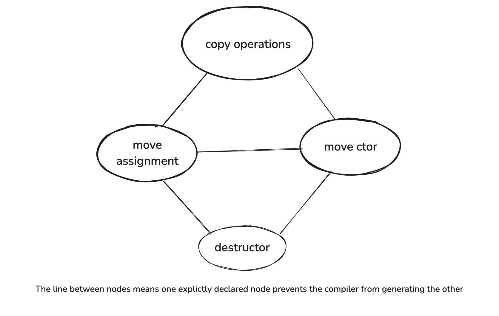

Special member functions likey to be generated by compilers are
Generated functions are implicitly public and inline. They are non-virtual unless it is a destructor in a derived class inheriting from a base class with virtual destructor.
Copy operations perform memberwise copy on non-static data of the class and its base parts.
Move operations perform memberwise move on non-static data of the class and its base parts.
when compiler figures out the memberwise operations are not appropriate, then it will not generate the func.
Declaring a copy ctor does not prevent the compiler from generating a copy assignment operator, and vice versa. But declaring a copy operationprevents the compiler from generating move operations. Because if memberwise copy is not appropriate, then the compoiler figures that there is no reason that memberwise move is appropriate.
And the two move operations are not independent like the two copy operations, declaring one prevents the compiler from generating the other.
